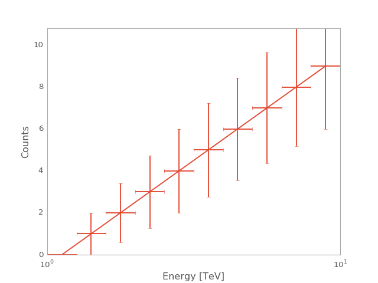

CountsSpectrum¶
-
class
gammapy.spectrum.CountsSpectrum(**kwargs)[source]¶ Bases:
gammapy.utils.nddata.NDDataArrayGeneric counts spectrum
Parameters: data :
array, listCounts
energy :
EnergyBoundsBin edges of energy axis
Examples
from gammapy.spectrum import CountsSpectrum import numpy as np import astropy.units as u ebounds = np.logspace(0,1,11) * u.TeV counts = np.arange(10) * u.ct spec = CountsSpectrum(data=counts, energy=ebounds) spec.plot(show_poisson_errors=True)
(Source code, png, hires.png, pdf)
Attributes Summary
axis_namesenergyEnergy axis interp_kwargstotal_countsTotal number of counts Methods Summary
copy()A deep copy of self. fill(events)Fill with list of events from_hdulist(hdulist)Read OGIP format hdulist peek([figsize])Quick-look summary plots. plot([ax, energy_unit, show_poisson_errors, ...])Plot as datapoint plot_hist([ax, energy_unit, show_energy])Plot as histogram spectral_index(energy[, dz])Power law spectral index ( numpy.array).to_hdulist()Convert to HDUListto_table()Convert to TableAttributes Documentation
-
axis_names= [u'energy']¶
-
energy= <gammapy.utils.nddata.BinnedDataAxis object>¶ Energy axis
-
interp_kwargs= {'bounds_error': False, 'method': u'nearest'}¶
-
total_counts¶ Total number of counts
Methods Documentation
-
fill(events)[source]¶ Fill with list of events
Parameters: events: `~astropy.units.Quantity`, `gammapy.data.EventList`,
List of event energies
-
plot(ax=None, energy_unit=u'TeV', show_poisson_errors=False, show_energy=None, **kwargs)[source]¶ Plot as datapoint
kwargs are forwarded to
errorbarParameters: ax :
axis(optional)Axis instance to be used for the plot
energy_unit : str,
Unit, optionalUnit of the energy axis
show_poisson_errors : bool, optional
Show poisson errors on the plot
show_energy :
Quantity, optionalShow energy, e.g. threshold, as vertical line
Returns: ax:
axisAxis instance used for the plot
-
plot_hist(ax=None, energy_unit=u'TeV', show_energy=None, **kwargs)[source]¶ Plot as histogram
kwargs are forwarded to
histParameters: ax :
axis(optional)Axis instance to be used for the plot
energy_unit : str,
Unit, optionalUnit of the energy axis
show_energy :
Quantity, optionalShow energy, e.g. threshold, as vertical line
-
spectral_index(energy, dz=0.001)[source]¶ Power law spectral index (
numpy.array).A forward finite difference method with step
dzis used along thez = log10(energy)axis.Parameters: lon :
AngleLongitude
lat :
AngleLatitude
energy :
QuantityEnergy
-
to_hdulist()[source]¶ Convert to
HDUListThis adds an
EBOUNDSextension to theBinTableHDUproduced byto_table, in order to store the energy axis
-
to_table()[source]¶ Convert to
Tablehttp://gamma-astro-data-formats.readthedocs.io/en/latest/ogip/index.html
-
{kind=link}
{kind=link}